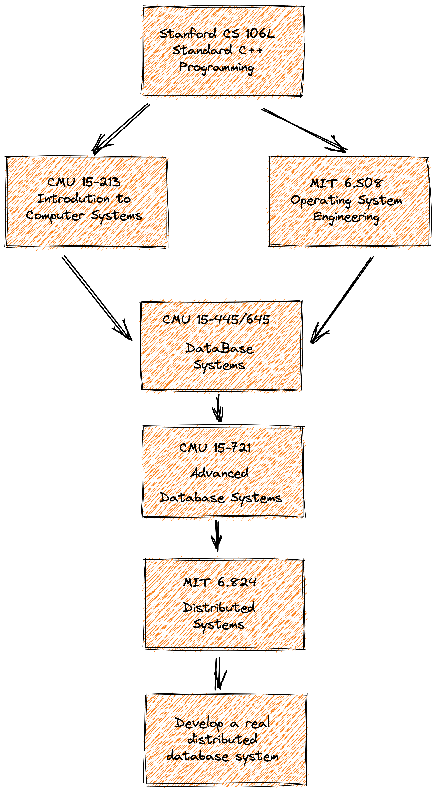

概述
eraft 项目的是将 mit6.824 lab 大作业工业化成一个分布式存储系统，我们会用全网最简单，直白的语言介绍分布式系统的原理，并带着你设计和实现一个工业化的分布式存储系统。
我们团队致力于解读国外优秀的分布式存储相关开源课程，下面是课程体系图

我们始终坚信优秀的本科教学不应该是照本宣科以及应付考试，一门优秀的课程，应该具备让学生学会思考、动手实践、找到问题、反复试错、并解决问题的能力，同时应该尽量用最直白，最简单的语言传达关键的知识点。作为计算机工业界的工作者，我相信做课程和做技术一样，并不是越复杂越好，应该尽量的让设计出来的东西简单化。
好了，虾BB 的话就说这么多，找到我们的最新动态，欢迎关注
https://www.zhihu.com/people/liu-jie-84-52
接下来我们进入正题，如何实现一个分布式系统。
理论原理
为什么需要分布式？
一致性算法
数据分片
实验项目
集群架构

首先我们先介绍下架构介绍
概念介绍
bucket
它是集群做数据管理的逻辑单元，一个分组的服务可以负责多个 bucket 的数据
config table
集群配置表，它主要维护了集群服务分组与 bucket 的映射关系，客户端访问集群数据之前需要先到这个表查询要访问 bucket 所在的服务分组列表
服务模块
configserver
它主要负责集群配置表版本管理，它内部维护了一个集群配置表的版本链，可以记录集群配置的变更。
shardserver
它主要负责集群数据存储，一般有三台机器组成一个 raft 组，对外提供高可用的服务。
基本功能的实现
1.领导选举
2.日志复制
3.存储引擎
4.数据持久化存储
5.快照恢复
6.集群配置变更
7.bucket 数据迁移
8.客户端实现
下载构建代码
git clone https://github.com/eraft-io/mit6.824lab2product.git
cd mit6.824lab2product
go mod tidy
make
产出物的 bin 在 output 目录下
快速动手开始
1.启动一组配置服务
# 8088 leader
./cfgserver 0 127.0.0.1:8088,127.0.0.1:8089,127.0.0.1:8090
# 8089
./cfgserver 1 127.0.0.1:8088,127.0.0.1:8089,127.0.0.1:8090
# 8090
./cfgserver 2 127.0.0.1:8088,127.0.0.1:8089,127.0.0.1:8090
2.添加一个初始化的集群分组
# join 一个初始的 server 分组，这里第一个参数不一定是 127.0.0.1:8088，要对应具体的配置服务 leader 地址
./cfgcli 127.0.0.1:8088 join 1 127.0.0.1:6088,127.0.0.1:6089,127.0.0.1:6090
3.启动集群分组
./shardserver 0 1 127.0.0.1:8088 127.0.0.1:6088,127.0.0.1:6089,127.0.0.1:6090
./shardserver 1 1 127.0.0.1:8088 127.0.0.1:6088,127.0.0.1:6089,127.0.0.1:6090
./shardserver 2 1 127.0.0.1:8088 127.0.0.1:6088,127.0.0.1:6089,127.0.0.1:6090
4.再次添加并启动一个分组
// 再加入一个分组
./cfgcli 127.0.0.1:8088 join 2 127.0.0.1:7088,127.0.0.1:7089,127.0.0.1:7090
./shardserver 0 2 127.0.0.1:8088 127.0.0.1:7088,127.0.0.1:7089,127.0.0.1:7090
./shardserver 1 2 127.0.0.1:8088 127.0.0.1:7088,127.0.0.1:7089,127.0.0.1:7090
./shardserver 2 2 127.0.0.1:8088 127.0.0.1:7088,127.0.0.1:7089,127.0.0.1:7090
5.查询分组状态
./cfgcli 127.0.0.1:8088 query
6.读写数据
./shardcli 127.0.0.1:8088 put testkey testvalue
./shardcli 127.0.0.1:8088 get key